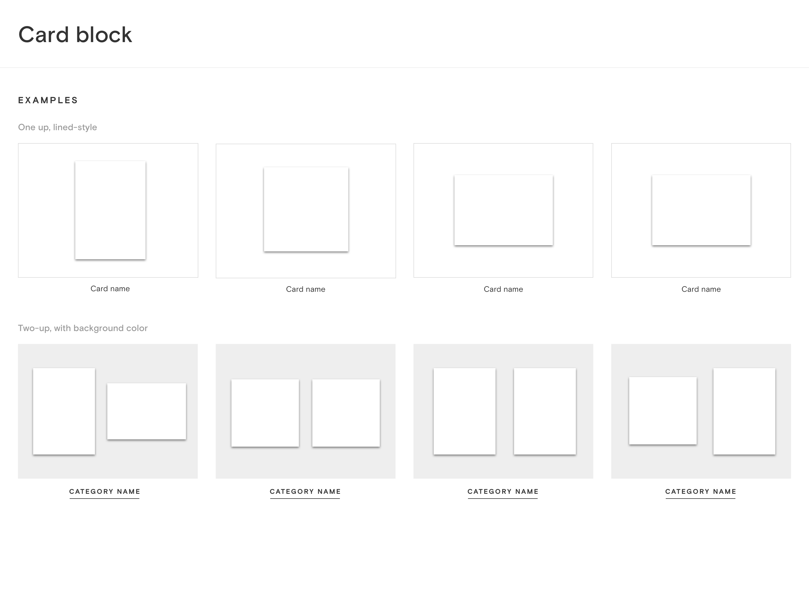

Challenge
Paperless Post is loved by users for its beautifully-designed cards and branding. Good design must extend beyond the 5x7 card, of course, (or more like 400px in this case), and the award-winning campaign. Our interface and user experience must also reflect the attention to detail and delight that our selection of invitation designs has provided for our users.



Mobile web onboarding flow: Simple graphics explain key product functionality.